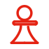

Garmin Connect Redesign
Redesigning the companion app for world-class fitness hardware: from a clinical data dump to a contextual health intelligence layer.
Product thinker. System builder. Cross-functional strategist.
I help teams turn complex problems and data-heavy systems into intuitive, accessible products. Combining research, strategic thinking and interaction design, I bridge the gap between business goals and what users genuinely need.
UX/UI · ORGANIZATIONAL DESIGN · DESIGN OPS · DATA VISUALIZATION · GIS TOOLS · B2B SAAS · INTERACTION DESIGN · DESIGN THINKING · DESIGN SYSTEMS
UX/UI · RESEARCH · DATA VIZ · GIS · B2B SAAS · INTERACTION DESIGN
Selected Work
Each case study documents the problem, the research, and the decisions.
Redesigning the companion app for world-class fitness hardware: from a clinical data dump to a contextual health intelligence layer.
A GIS risk assessment tool redesigned to surface critical infrastructure data, visualising pipe age, diameter, and risk directly on the map layer.
Result: 3× faster risk assessment, zero layer switching.
A community app connecting people in need with local services, designed around trust, simplicity, and speed.
Designing a visual system and conversion-focused website for a CMS startup to establish market differentiation and build user trust from day one, contributing to subscription growth from 1 to 10+ countries.
ABOUT
I'm Denise, a Senior Product Designer with 10+ years of hands-on experience in B2B SaaS and creating products across Europe, Japan, and beyond. I'm drawn to problems where data and human behaviour intersect, designing interfaces that surface what matters and remove what doesn't.
Combining strategic thinking with a human-centred, research-led approach, I translate complex challenges into clear, impactful solutions across Product Design, Organizational Design, and Design Ops. My work fosters cross-functional collaboration, optimises design processes, and aligns decision-making with business objectives. Grounded in evidence and strategic design rationale, this approach ensures clarity, consistency, and continuity from discovery through to delivery.
Expert in end-to-end product design, design systems, accessibility, AI-assisted workflows, mixed-methods research, and data-informed decisions. Skilled at solving complex problems and aligning product vision, roadmapping, and KPIs with engineering and business stakeholders to deliver scalable, inclusive experiences for data-heavy and AI-powered products.

Defining what to build and why, connecting goals to user needs.
Qual and quant research to surface direction-changing insights.
Scalable foundations for faster, consistent products.
Fluent across engineering, product, data, and leadership stakeholders.
KIND WORDS
"Having worked with her on multiple projects, I have consistently been impressed by her ability to blend aesthetics with functionality, creating user-centric designs that elevate the overall experience. She excels in translating complex requirements into elegant and effective designs. Her ability to work closely with developers, product managers, and stakeholders fosters a smooth design-development process."
Yasuhito Sakuraba
CEO, Tenchijin Inc.
"What sets Denise apart is her strategic mindset. She doesn't just design interfaces, she crafts experiences that align with business goals and create meaningful engagement. Her leadership has been instrumental in shaping the design culture at Tenchijin, fostering collaboration across teams, and pushing the boundaries of what is possible with satellite data solutions."
Yohei Nishiyama
VP of Business Development, Tenchijin Inc.
"Denise brings a unique combination of deep expertise in design processes and a strong business acumen and strong communication skills. Denise has been instrumental in acquiring customers in Europe and played a key role in building our presence there. Denise provided clear and relevant guidelines to front-end engineers. As a result, prospects and customers in Europe honed the value the software was bringing to them in their daily operations. "
Adrien Lemal
Business Development Manager, Cintoo US Inc.
"Denise is a very methodical researcher, always ensuring high quality across all steps. She is determined with keen attention to detail, a skillful problem solver in research and design."
Mário Barros
Innovation Consultant & Design Educator, Aalborg University
CONTACT